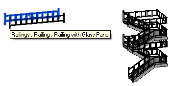
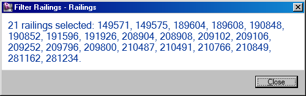

Retrieve Railing Elements
I already mentioned that API access to stairs and railings is currently still a bit patchy. Still, you can retrieve their geometry, determine the instances on a given level, and list the railing types.
As you can see from the comments by Berria and Andrew, it is currently not possible to create railings, even though I did once implement a command named CmdNewRailing in The Building Coder samples to test this which unfortunately does not create a new railing instance.
Anyway, as discussed with Renzo, we can easily retrieve railing instances. This question of retrieving railings came up again now, and here is yet another answer and snippet of sample code to address it, this time demonstrating a nice compact concatenation of filtered element collector, generic LINQ, and string methods to create a string listing the element ids of all instances found. First, here is the question:
Question: I implemented the following code to retrieve railing instances, but it does not do what I expect, and colElmts.Count always returns zero:
Dim FilterList As Generic.IList(Of DB.ElementFilter) = New Generic.List(Of DB.ElementFilter) Dim collector As DB.FilteredElementCollector = New DB.FilteredElementCollector(doc) Dim Filter As DB.ElementCategoryFilter = New DB.ElementCategoryFilter(BuiltInCategory.OST_Railings) Dim LOrF As DB.LogicalOrFilter = New DB.LogicalOrFilter(FilterList) Dim colElmts As Generic.List(Of DB.Element) = collector.WherePasses(LOrF). WhereElementIsNotElementType.ToElements()
The problem only occurs with railings. All other categories seem to work fine. By the way, the current user selection in rvtDoc.Selection does return railing objects if they have been selected in the user interface.
Answer: As mentioned above, railings are currently not represented by the Revit API, so there is only limited API access to them.
Still, you should be able to retrieve them using filters in the manner you indicate.
I implemented some sample code based on yours and ran it on the model you provided:

The initial code does indeed retrieve zero elements.
I thereupon analysed the railings using RevitLookup, and see that their built-in category is not OST_Railings, which is what you are filtering for, but OST_StairsRailing. Modifying my code to retrieve that category produces the following:

Here is the modified code producing that message – only four lines of relevant code, albeit two of them rather long and sub-divided:
[Transaction( TransactionMode.ReadOnly )] public class Command : IExternalCommand { public Result Execute( ExternalCommandData commandData, ref string message, ElementSet elements ) { UIApplication uiapp = commandData.Application; UIDocument uidoc = uiapp.ActiveUIDocument; Application app = uiapp.Application; Document doc = uidoc.Document; string [] ids = new FilteredElementCollector( doc ) .OfCategory( BuiltInCategory.OST_StairsRailing ) .WhereElementIsNotElementType() .Select<Element,string>( e => e.Id.IntegerValue.ToString() ) .ToArray<string>(); int n = ids.Length; string s = (0 == n) ? "No railings selected." : (n.ToString() + " railing" + ( 1 == n ? "" : "s" ) + " selected: " + string.Join( ", ", ids ) + "."); TaskDialog.Show( "Railings", s ); return Result.Succeeded; } }
The moral of the story is: use RevitLookup to explore your model. Use the exact built-in category of the objects that you are looking for.
You might of course want to filter for all the different variations of the railing category, in which case the approach described to retrieve all MEP or structural elements might be of interest to you, since it includes handling of multiple categories.
Here is FilterRailings.zip containing the complete Visual Studio solution including source code and add-in manifest file for my little test command.